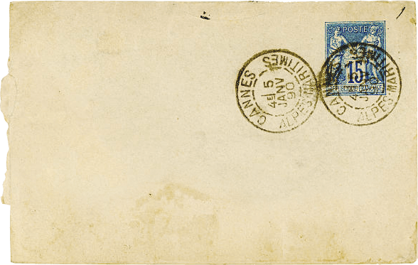
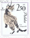
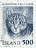
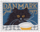
Click and drag to explore...
Credits
Transparent PNG Blogs
These are some of my favorites for sourcing things!Books
- Pokémon cover: PokéNatomy by Christopher Stoll
- Pokémon interior: After the Rain With You, illustrations by Kihara Misaki
- "De La Sphere" illustrations from Description de l'Univers by Allain Manesson Mallet, 1683
- Chronicles of Spirit Photography by Georgiana Houghton, 1882
Illustrations & Photography
- Insect illustrations by Daniel Carter Beard, 1915: "Leg Plan of the Baby" caterpillar, "cut-worms," caged beetle
- "Can I Kill That Fly?" illustration by Ivor Cutler for the International Times, Nov 1966
- Hand with thorns and flower from painting by Felipe Baeza, 2023, in support of the Ali Forney Center for queer youth
- Anthill illustration by snailspng from the British Library's manuscript collection
- Row of gold bugs on pink background by snighilarium
- Toad with human face from cover of Witchcraft in England
- Cygnus the Swan constellation from 1447 Italian manuscript
- Pair of night sky rooftop photos by Janja Sojka
- Snailfish illustration from Pseudoliparis swirei description paper, drawn by Thomas D. Linley, paper texture by by slomr2 from Wallpapers.com
- Palette preview cat painting by Jules Gustave Le Roy, c. 1890
Objects
- "Hey" bronze hand with face by Ken Little, 1996
- Glass star pendant with lock by Raymond Roussel, 1923. Contains a star-shaped cookie.
- Royal lion puppet by Cat Johnston
- Blue and gold celestial shapes from mirror by atelier Mithe Espelt
- Medieval-style carved circle from 1950s-60s
- Cast iron owl incense burner from Japan, 1950s
- Folded hands gold daguerreotype pin from the 1850s, possibly abolitionist
- Glass eye by Jari Sheese, 2010
- Emerald salamander brooch from The Jewellery Editor, originally 16th-17th century
- Gold ship pendant by Alfred André, late 19th century
- Coffin doily by CreativeWorksByAnnie (you can make one!)
- Glass shark egg with dried flowers by Andrea Spencer Glass
- Stained glass insect lamp by cady_the_creator
Tapestries
- Large background tapestry from Belgium, 1920s
- Lady and the Unicorn tapestry by WallTapestry.com based on A Mon Seul Desir I, originally woven 1511
- Bird tree tapestry and red tree tapestry by WallTapestry.com based on William Morris designs from 1879
Misc
- Load screen 'Waiting Room' railway sign, 1920s
- Brown paper tape from HiClipart
- Paint swipes on palette buttons from OnlyGFX
- Arrow cursor image from an antique diamond arrow pendant, early 20th century
- Hand cursor image from charm by Licensed to Charm
- Black wing from PNG Arts
My Images
Photos I took myself of objects I own. Free to use for non-commercial purposes. Credit appreciated but not required.- Koi fish charm
- Antique spoons
- Dark green stone orb
- Hedgehog salt shaker
Other Notes
- Ammonite with carved snake head is an English snakestone, based on the legend of St. Hilda
Palettes
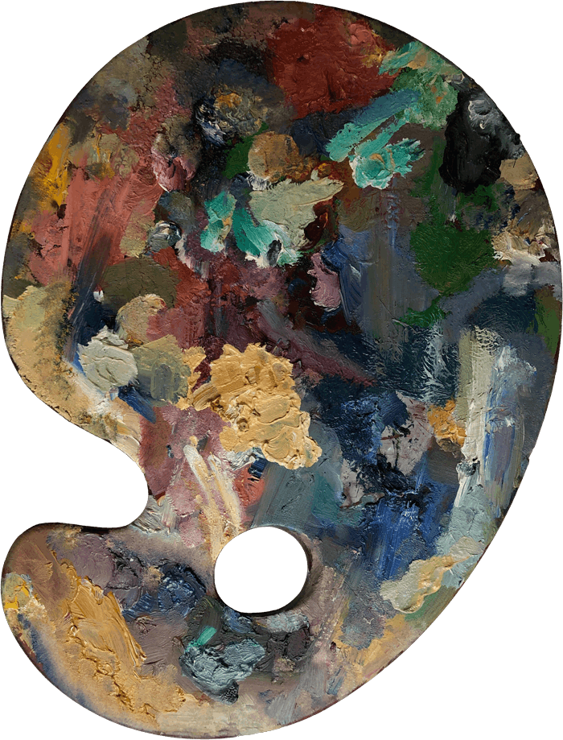
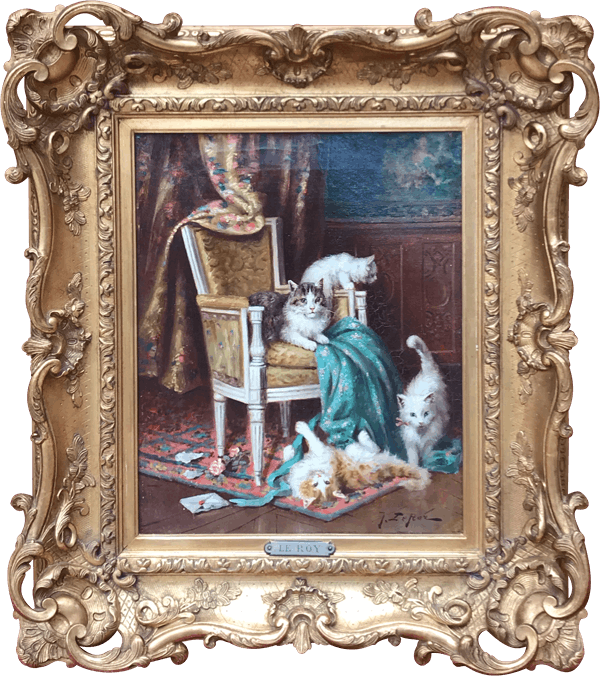
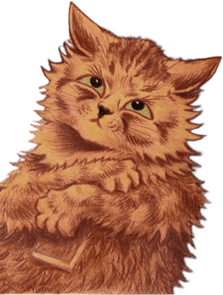
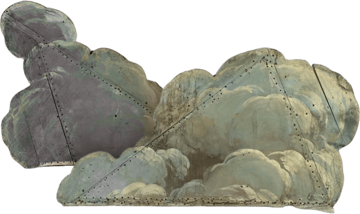
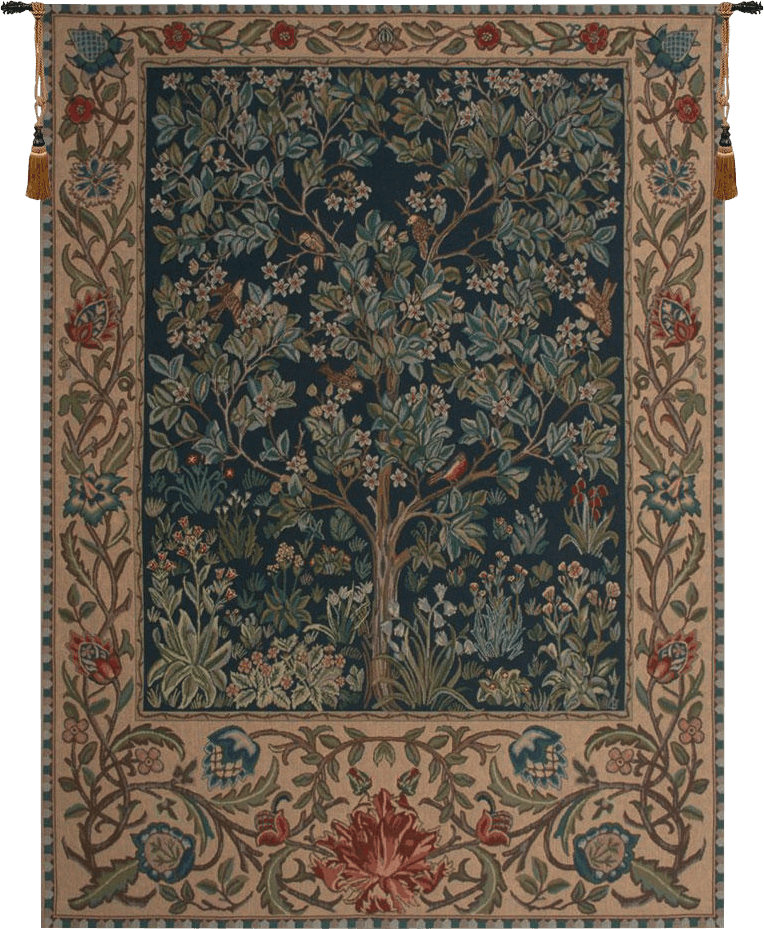
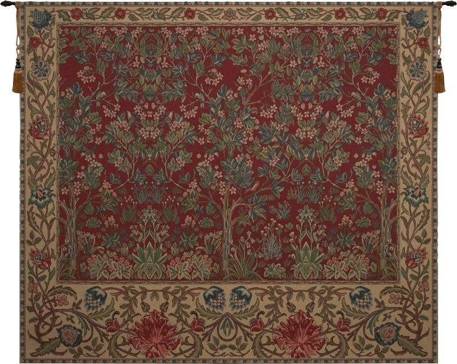
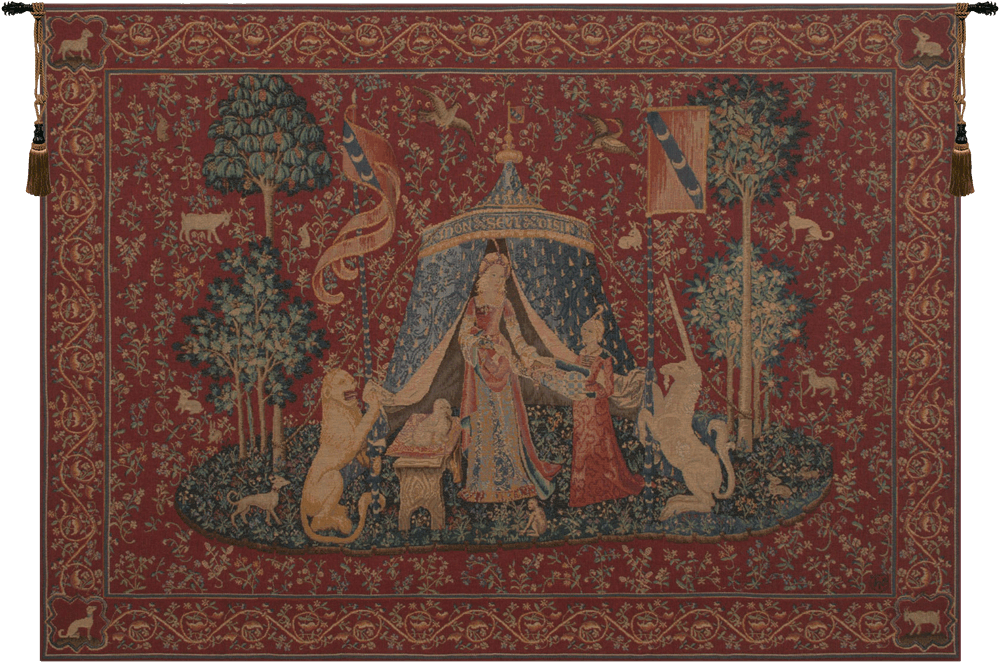
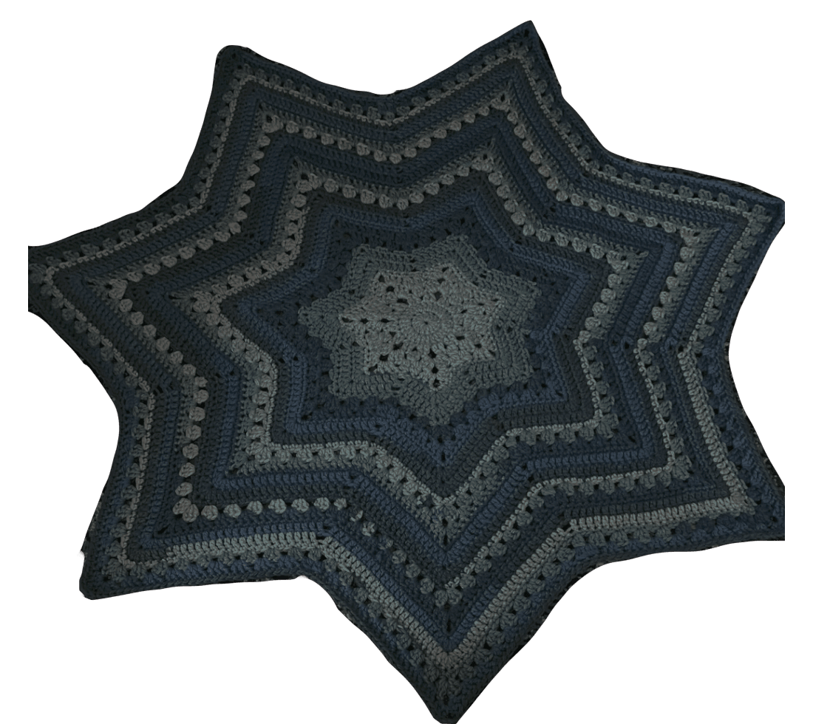
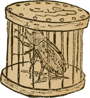
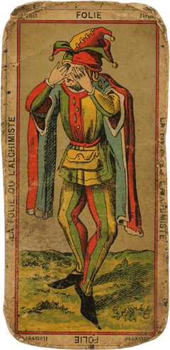
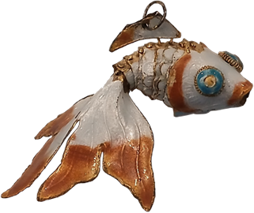
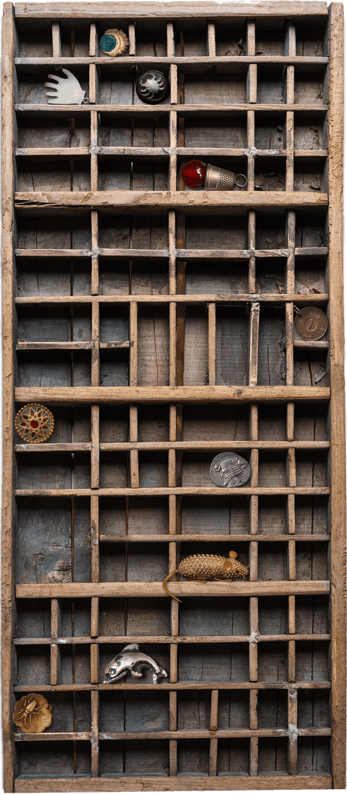
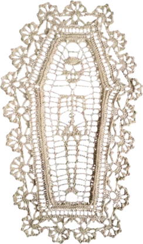
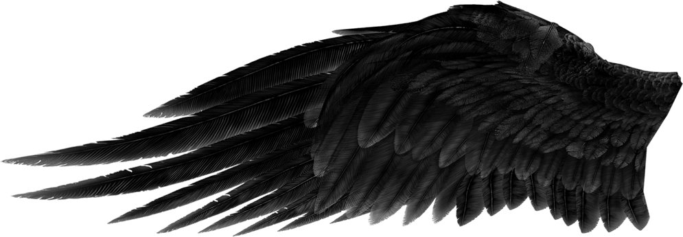
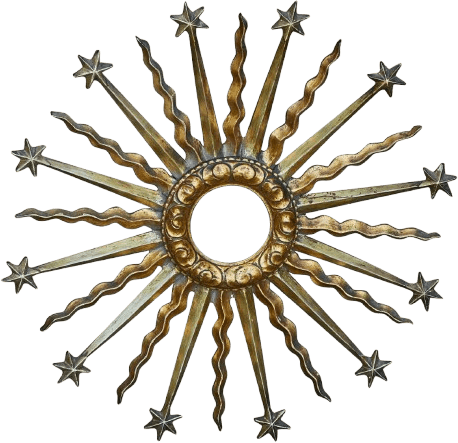
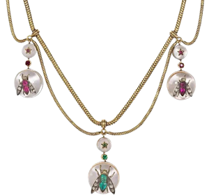
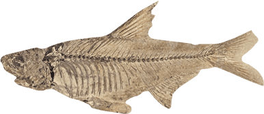
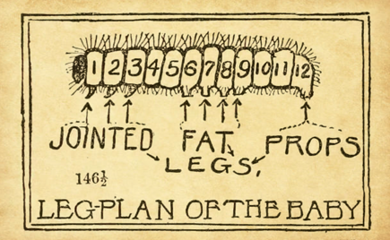
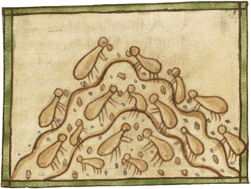
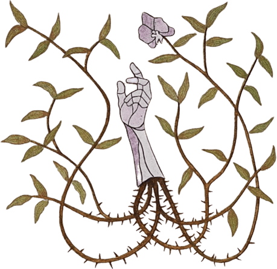
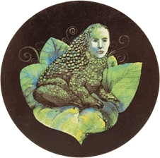
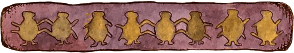
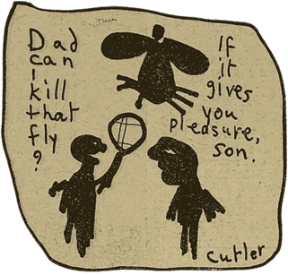
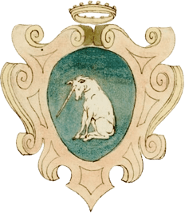
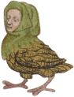
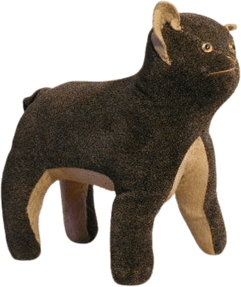
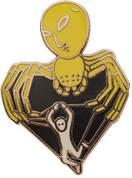
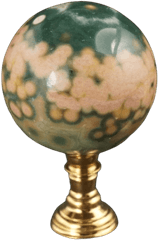
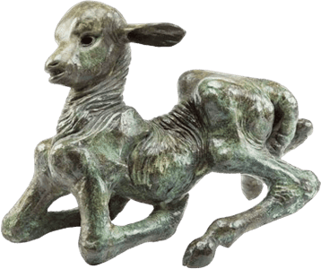
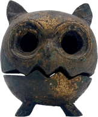
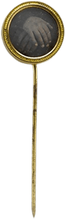
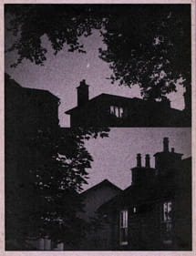
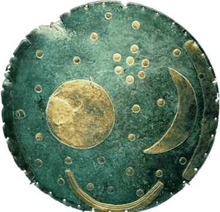
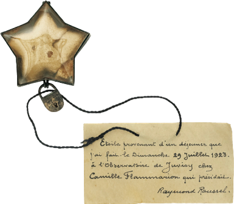
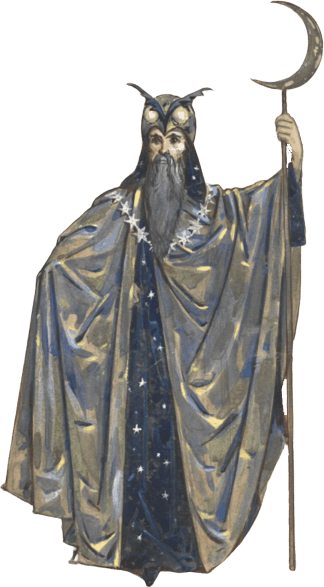
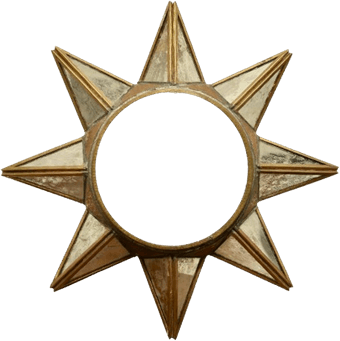
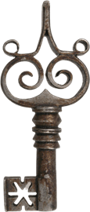
Snailfish

Pokemon Shrine